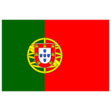
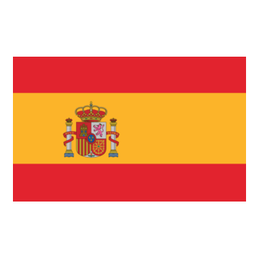

FORMAÇÃO ACADÊMICA
GRADUAÇÃO - Engenharia de Sofware (Em andamento)
UNINTER - Início 2025
ENSINO MÉDIO - SESI/SENAI
Escola Raul Leite - Conluído em 2004
IDIOMAS
 Português - Nativo
 inglês - Fluente
inglês - Fluente
 Espanhol - Avançado
Italiano - Básico
HABILIDADES E EXPERTISE
- Traduções, Transcrições e Escrita
- Gerenciamento de frota, despachante e coordenação de logística (Truck e Trailers)
- Especialista de serviços de atendimento ao cliente
- Pacote Office - Graphic Design
- SaaS, CRM (básico), Banco de Dados
EXPERIÊNCIA PROFICIONAL
Franco Fleet Services
Despachante | Fev/2025 - Presente
Como despachante na Franco Fleet Services, sou responsável por coordenar os serviços de emergência e manutenção preventiva no local, nos EUA, para caminhões e reboques comerciais, com uma equipe de mais de 50 mecânicos altamente qualificados. Minha função exige alta pressão e pensamento lógico crítico para gerenciar o serviço em diversas plataformas simultaneamente.
Manga Rosa Café
Gerente | 2020 - 2025
Como Gerente no Manga Rosa Café, fui responsável por todas as operações do bar e restaurante, incluindo administração de documentos e pagamentos. Proporciono suporte ao cliente, treinamento e gerenciamento de equipe, garantindo um serviço de alta qualidade.
MSC (Linha de Cruzeiros - Offshore)
Bar Waitress / Bartender | 2019 - 2020
Durante meu tempo na MSC, atuei como Bar Waitress e Bartender, oferecendo serviço de bar a passageiros de diversas nacionalidades. Recebi treinamento em vinhos e bebidas finas, além de mixologia e preparação de coquetéis. Minha função exigia um alto nível de atendimento ao cliente, combinando habilidades de vendas e hospitalidade para proporcionar uma experiência excepcional aos passageiros.
Costa Crociere (Linha de Cruzeiros - Offshore)
Assistant Waitress / Waitress Trainee | 2017 - 2019
Na Costa Crociere, desempenhei o papel de Assistant Waitress e Waitress Trainee, onde forneci serviço de bar e restaurante à moda italiana. Recebi treinamento sanitário e de manuseio de alimentos, garantindo que todos os padrões de higiene fossem rigorosamente seguidos. Minha experiência nesta função aprimorou minhas habilidades em atendimento ao cliente e serviço de hospitalidade.
MRS Global (Imigração e Relocação)
Visa Consultant - Sênior | 2011 - 2016
Como Visa Consultant Sênior na MRS Global, gerenciei contas tanto no escritório quanto em operações de campo. Fui responsável pelo atendimento consular e despacho de documentos, tanto nacional quanto internacionalmente. Minha principal responsabilidade era cuidar de todos os aspectos relacionados à imigração, migração e relocação de expatriados, garantindo um processo tranquilo e eficiente para os clientes.